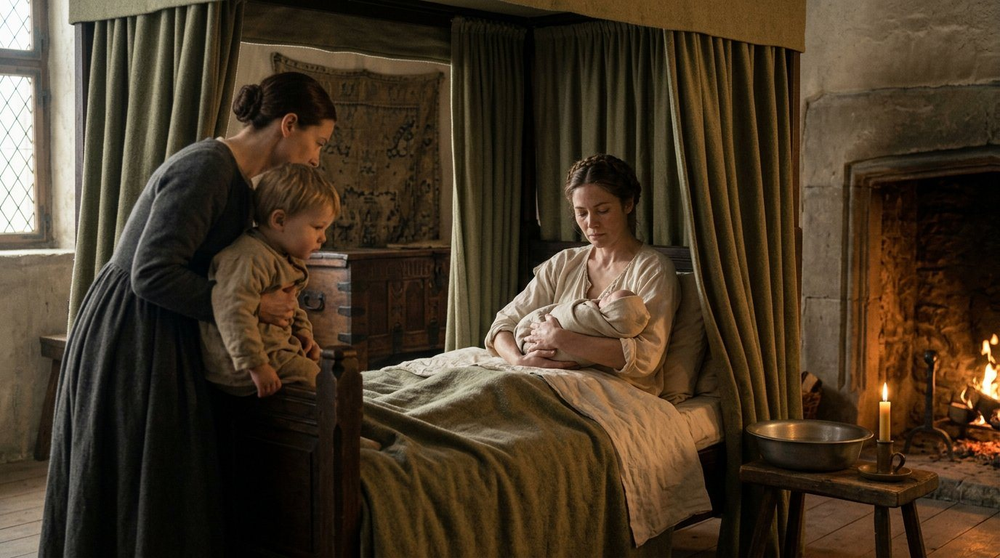
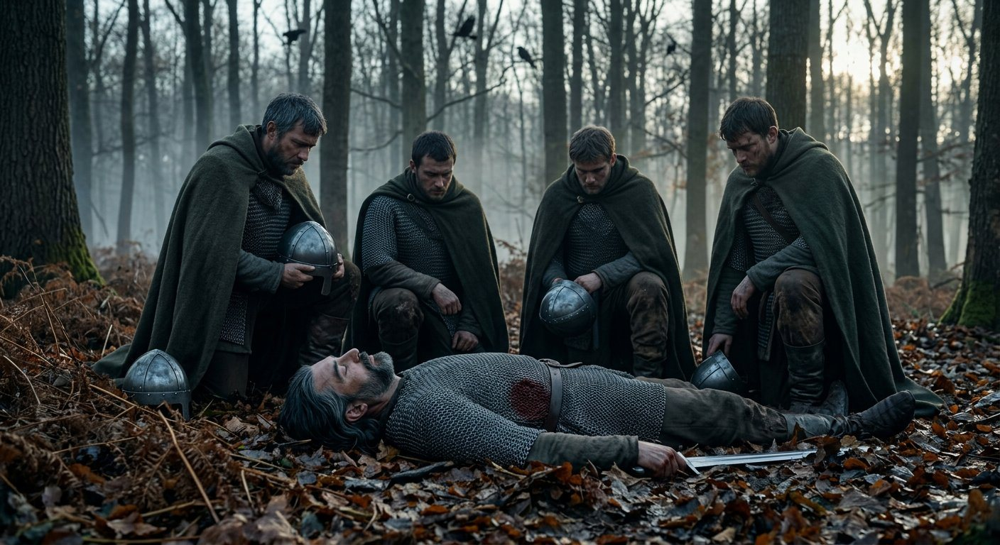
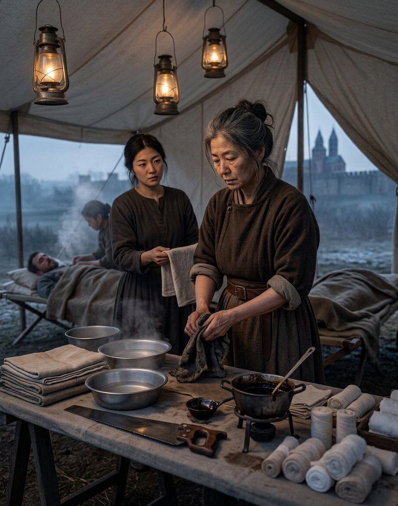
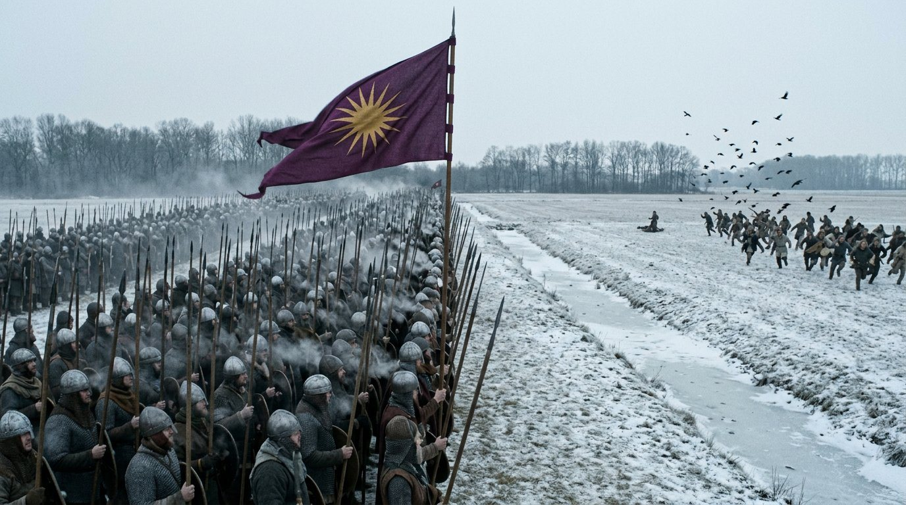
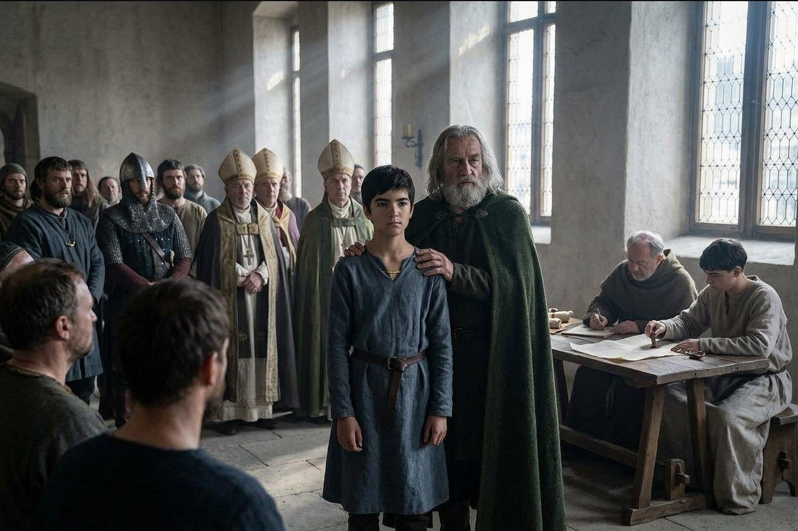
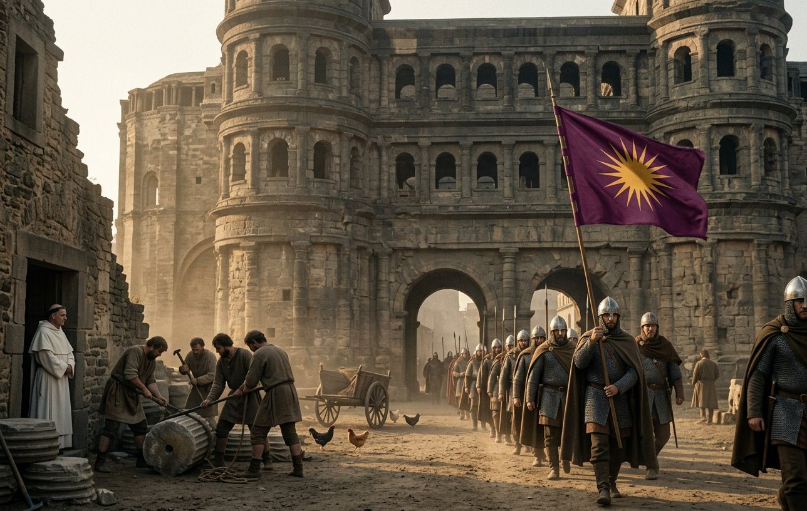
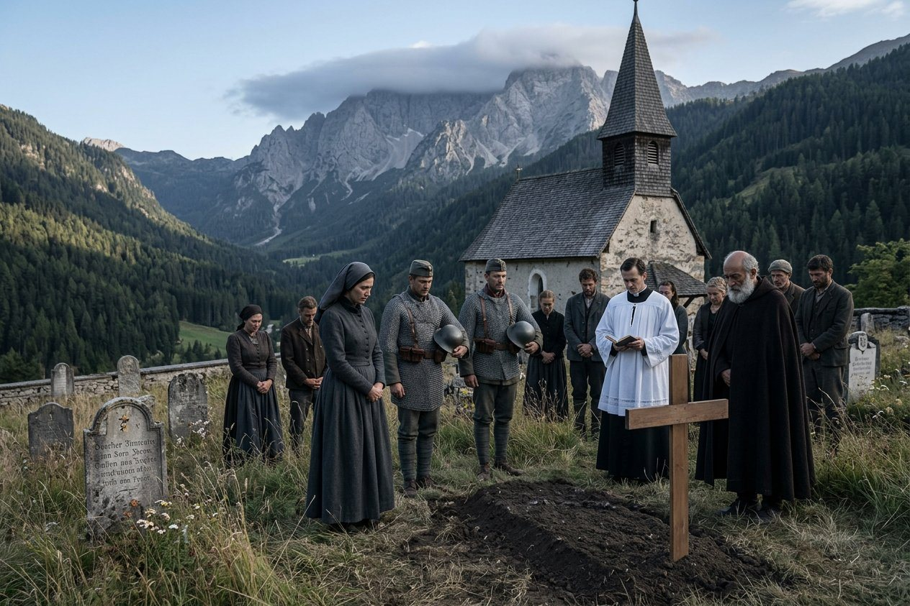
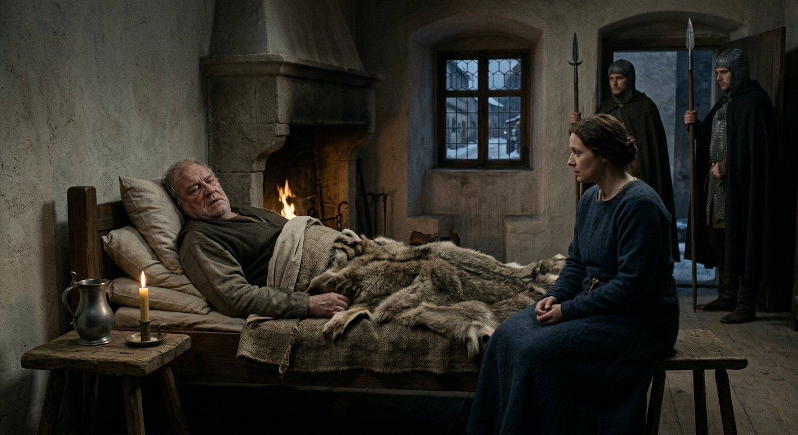
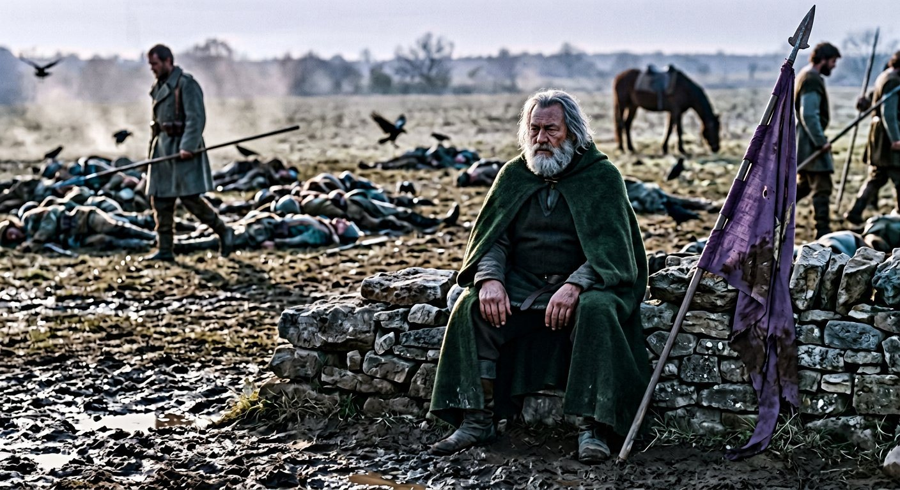
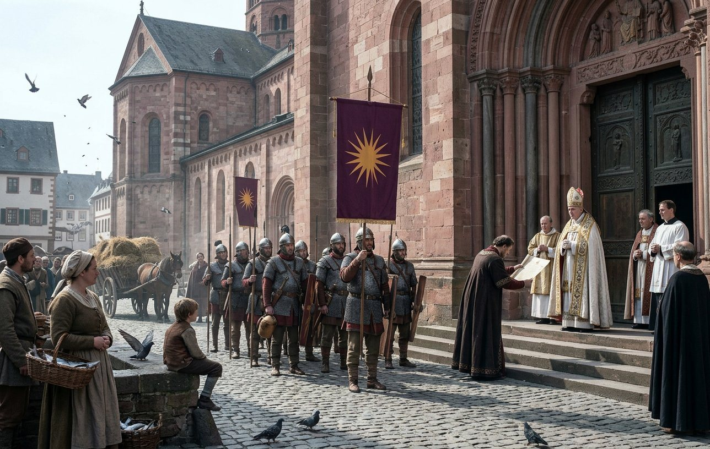

The two Edouinos
On the eighth day of the first month of 917 the Queen was delivered of a son at Regensburg, and the record calls him Edouinos.
He was the eighth child. He was the second son born to Raina in eighteen months, and he was named for his father, and that on its own is the most ordinary thing in this book: a king of sixty-six with an heir of fifteen and six other sons gives his name to the last of them and nobody in the hall thinks anything of it.
The difficulty is that the first Edouinos was not dead.
He had been born on the seventeenth day of the seventh month of 915, at Kruszwica in Poland, in a tent, in the middle of a tournament, and he was seventeen months old in the first month of 917 and he was alive and he was in the same house.
So from the eighth day of the first month of 917 the Kingdom of Bavaria has two living sons called Edouinos, and the record writes both of them, and the record does not remark on it at all.
I have read the entries a great many times looking for a word that would explain it and there is no word. There is no second name, no diminutive, no distinction of any kind in the chancery. Two boys, one name, both sons of the King, both alive.
I am not going to explain it, because I do not know and neither does anybody who is still alive, and a book that invented a reason would be a book that had decided something about a man's household that his own household never said out loud.

What I will do is write down what a house looks like with two of them in it. The nurses called them by their mothers. The chancery, when it came to it, wrote the elder one's counties and the younger one's separately and put the date and the mother on both and let a clerk in fifty years work it out from that, which is what we have all done. The elder was the Queen's son; so was the younger. There was no distinction to be made and no distinction was made.
And in the household's own speech — I heard this, in the yard, from a woman who had been in service there since 903 — the elder was Edouinos and the younger was also Edouinos, and when it mattered you said which room.
I have one thing to add and then I will leave it, and it is not an explanation; it is a fact about the man. He was sixty-six. He had buried his oldest friends, he had named a son for himself once already at sixty-five, and in the first month of 917 his wife bore him another and he gave it his own name a second time. A man who does that is either very sure of his line or very afraid of it, and I have written nine chapters of this volume about which of the two I think he was, and I am not going to settle it on a christening.
The second war for West Franconia
The war was declared on the sixth day of the fourth month of 916 and ran to the sixth month of 917, and the enemy was called Karl.
The reader has met a Karl in this book already, in the fields of 905, where he was the man who put one thousand nine hundred and seventy-seven into the line at Leuchtenburg against our one thousand seven hundred and seventy-four, and beat us in the counting and lost forty men doing it. Whether this is the same Karl I cannot tell you. There are three Ludwigs in this history and I have written a note about them, and Karl is now in the same condition, and I am not going to join two kings into one man on the strength of a name and a border.
What the record gives of this war is one line and a victory. It gives no battles, no numbers, no losses, and no place. The war for West Franconia was won, and on the first day of the sixth month of 917 two counties came out of it — Dürn and Kaiserslautern — and they were given to Edouinos, who was one.
There is a thing about this war that I have to write down and mark as what it is, which is not a note but a warning to whoever reads this book in a hundred years.
The record I keep has a line at the end of a war that says what happened, and for this war the line says loss. The King's own memory of it, in the same record, on the same page, says victory. Those two statements cannot both be true, and I have set them beside each other and I am not going to reconcile them, because the reconciliation would be a story I made up in 919 about a war I was not at.
What I will say is this. Two counties were taken and given away. A kingdom does not take counties off an enemy it has lost to, and the realm's own count went up and not down in that year. I have written it as won, and the note at the back says why, and a reader who prefers the other reading has the record's own word for it and my permission to use it.
Leon of Argos, the seventh day of the eleventh month of 917
On the seventh day of the eleventh month of 917, Leon of Argos was killed in battle.
He came into this company in Greece in 896 with Arsenios and Theodoros the Heartless and a boy called Vlastimir who could read, and he was in it twenty-one years, and he died in the Lotharingian country at the age of about forty-eight, in a war against Rorgon of Frisia.
I have to be honest about how much I have on him. He is in the record eight times in twenty-one years: once when he joined, once at a battle in 899, twice in the ledger as a debtor, once as a witness, once when he was made a sergeant, once when his horse was valued, and once now.

Eight lines in twenty-one years, and one of them is the day he died. That is what the record does to a good officer: a man who was in every campaign since 896 is four lines of account and a valuation, and then a line with a date in it and no numbers.
I knew him. He was quiet, and he was not clever, and he had a habit of standing with his hands behind his back when he was thinking which made him look like a man being told off. He was a good sergeant in a company of very good sergeants and he would have been a bad captain, and he died doing the thing he was actually good at, which is being in the front of a line that is going forward.
His death is in the middle of a run of three battles in six months, and I have put him before the battles rather than after, because the record puts him before the battles and because that is the correct order.
Speyer, the thirtieth day of the eleventh month of 917
Twenty-three days later, on the thirtieth day of the eleventh month, the company fought Rorgon of Frisia at Speyer: three thousand two hundred and fifty-nine of ours against two thousand three hundred of his, and four hundred and forty-seven of ours did not come home, against seven hundred and eighty-four of his.
Four hundred and forty-seven.
I want to stop on that number, because this book has been in the trade for thirty years and there are only three days in it that are worse. Lengenfeld in 907. And this. I have gone through the ledger twice to be sure and I am sure.

Speyer was not a disaster. We won it, and the enemy lost nearly twice what we lost, and a general who trades four hundred and forty-seven for seven hundred and eighty-four is a general who has done his arithmetic correctly. That is the sentence I want the reader to sit with: the arithmetic was correct.
Here is what four hundred and forty-seven means in a company of this kind, and I am the only person left in it who can write this down.
It means the surgeons' tents for three days. It means Yehudis, who is sixty-five and has been at this since 885, working standing up from the second hour after the field until the evening of the second day, and it means me at the next table with a saw and a pot of pitch, and it means Stoyanka — who came to us at twelve years old in 897 asking for the smith by name — running iron and water and doing the counting, because the counting is the thing that stops it being unbearable.
Four hundred and forty-seven means that a company of two thousand, which had been a company of two thousand for eight years, was a company of fifteen hundred and fifty in the twelfth month of 917, and that the men who joined in 918 joined a different company from the one that fought at Speyer, and never knew it.
And it means that the King of Bavaria, who was sixty-seven and had not been in the line since Hohenau two and a half years before, came out to the field afterwards and walked it, which is a thing he had begun to do, and which I had begun to think was a mistake, and which I did not say.
Demetrios, and Seligenstadt
On the fourteenth day of the eleventh month of 917, sixteen days before Speyer, Uta was delivered of a son at Regensburg, and the record calls him Demetrios.
Her third. Lysistratos in 907, who was taken from her at four months old and made a lord of Steyermark; Anthis in 916, who stayed; and now a son, at thirty-seven, in the eleventh month, sixteen days before the worst day the company had had in ten years.
I was not at the birth. I was at Speyer, in a tent, with a saw. I have written that sentence about a birth in this book once before, in the chapter before the last, and I find that I am writing it again and that it is not a coincidence and that the two halves of my life have been in different places for a long time.
She called him Demetrios. That is a Greek name, in a household where the German woman's first son is called Lysistratos and her daughter is called Anthis, and I have no explanation for any of the three and I am not going to make one up, and I notice that in the eleven years she has been in that house she has named three children and every one of them has a Greek name and none of them has a German one.
Six weeks later, on the ninth day of the first month of 918, the company fought again at Seligenstadt, against a lord called Viric: three thousand and seventy-five of ours against four hundred and seventy-six of his.
Three of ours died.
I wrote about Stříbro in the twenty-first chapter, which was five thousand five hundred and fifty-five against four hundred and twenty-three and cost us three men, and I said there that it was not a battle, it was a column walking into a smaller column. Seligenstadt was the same and I am putting it here for a different reason.
The reason is that by the ninth day of the first month of 918 I had seen the arithmetic from both ends inside six weeks. Four hundred and forty-seven out of two thousand at Speyer; three out of three thousand at Seligenstadt. Both of them were victories. Both of them went into the record as one line with two numbers in it, and a clerk in a hundred years will read them one after the other and think they were the same kind of event.

They were not. One of them emptied the surgeons' tents and one of them emptied a field. The record cannot tell the difference and I can, and that is the whole of why this book exists.
Koblenz, the fifteenth day of the third month of 918
On the fifteenth day of the third month of 918 the war was fought again at Koblenz: three thousand one hundred and forty-seven of ours against two thousand and eighty-five of his, five hundred and forty-seven lost against seven hundred and eleven.
Five hundred and forty-seven, in the third month, ten weeks after Seligenstadt's three.
I have nothing new to say about five hundred and forty-seven and I am not going to pretend to. It was the same as Speyer, in the same war, four months later, and the men were the same men minus the four hundred and forty-seven and plus the recruits of the winter, and the difference between a company that has been bled and a company that has not is not something a plate can show and not something a chapter can afford to say twice.
What I will write is the thing that is not in the record at all, which is that in the spring of 918 the company's muster was short by eleven hundred names against the roll, and that nobody in the chancery noticed, because the chancery counted the regiments and not the men. Eleven hundred men is a battle. It went unnoticed because the paper said two thousand.
That is the fourth subject of this history and I have been circling it for six chapters: the kingdom is vast and it is held together with paper, and paper does not bleed, and every year the paper and the country get further apart.
The heir comes of age
On the twenty-fourth day of the fourth month of 918, Antiphates was acknowledged a grown man.
He was sixteen. He had been in the record since the twentieth day of the eleventh month of 902, when he was born at Krassó to a captain with no country; he had been in a schoolroom since 908; he had been to Thessaly at eight and to Athens at twelve; he had a book of prices and a Latin priest and, as far as the ledger shows, not one foot of land.
And the record says, in the same breath as the acknowledgement, the thing that this whole volume has been waiting for: his father educated him personally.

I have written in two chapters of this book that nobody was raising the heir. That was true, and I wrote it because it was true, and I am now going to write the other thing, which is that in the last years the King took it over.
I do not know when it began. I know it was not in 916, because in the fourth month of 916 I went through the ledger and found nothing, and I know it had happened by the fourth month of 918, because the record says it in four words. Somewhere in those two years — between Moravia and the Rhine, between a war the King did not fight and a war he did — he decided that the son who would get nothing was going to get everything else.
What he taught him, nobody wrote down. I have the record's list of what the boy was at eighteen and I will come to it, and the list reads like a description of his father with the worst parts left out and two things added that no father teaches.
The next day, on the twenty-fifth, he was acknowledged a second time, and the record adds a clause that has puzzled me for a year: under his second guardian, Dietwin.
His second guardian. The first is not named. Dietwin is not in this book before this line and is in it twice after, and I have asked three people who were at Regensburg in 918 and none of them could tell me what a guardian does that a father does not, or why a boy acknowledged a grown man on the twenty-fourth day of April needs a guardian on the twenty-fifth.
Here is what I think, and it is a reading, and I mark it as mine. Two acknowledgements in two days is what you do when the first one is not enough. A grown man of sixteen in a kingdom of this kind is a grown man in the hall and a child in the chancery, and a second guardian is a legal instrument and not a tutor: it is a man whose name goes on the parchment so that the parchment holds if the father dies.
I think the King of Bavaria, sixty-eight years old, in the fourth month of 918, spent two days making certain that if he died in the summer his son would not be eaten by his own vassals. I have no proof. It is the only reading that makes the second day necessary.
On the first day of the fifth month the record makes him one of the realm's champions, and I have to be careful here, because it is not the same thing as the First of the Vanguard. A champion, in this kingdom's usage, may be a knighthood, or it may be a name on a list, and I have never got a straight answer out of anybody who would know. What is certain is that a boy of sixteen was made one.
And here is the list, which I am going to give whole, because it is the record's and because a reader who has come this far has earned it. At eighteen the record says of Antiphates: Just. Compassionate. Stubborn. Reckless. And two things that are not virtues and that I am not going to soften: it calls him a gray eminence, and it calls him a witch.
A gray eminence is a man who moves things without being seen to touch them, and a boy of eighteen can be that in a household of eight children and three mothers, and I can believe it, because I have watched him be quiet in rooms for sixteen years.
The other word I will not explain and will not defend. It is the record's word. This kingdom has been calling its king a witch for twenty years, in the way that a country calls a thing a witch when it cannot otherwise explain why it has been beaten by him twice; I have heard it in the yard and in a bishop's hall and I have never once heard it said to his face. Whether the son has it too, and whether that is the record repeating a slander or the record noticing something, I do not know. What I will say is that a prince of Bavaria who is feared by the church in the year 918 is a prince who will have a very hard reign, and that this book does not know the half of it yet.
And a Confucian education. That is the last item and it is the strangest. A boy at Regensburg in 918 was taught the books of a country four thousand miles east of him, in a language nobody in Bavaria could read, by — I have looked, and the record does not say by whom, and this time I am going to guess, because I was there and I know who in that company could read Chinese.
Shiina the Noble could. Shiina, who came out of the far north in 866 with a Nivkh name and a noble's manners and a book, who has been in this company fifty-two years and who is seventy-three in this spring, and who taught the father before he taught the son. If the King of Bavaria has a Confucian education it is because there is one man alive who could give him one, and he has been in the next room since 866.
I do not know that it was Shiina. But the record says a Confucian education and there is exactly one man in the Kingdom of Bavaria who could have given one, and he is in the next room.
Trier, the twelfth day of the fifth month of 918
On the twelfth day of the fifth month of 918 the company fought at Trier against a lord called Udalrich the Peaceful, and the record gives the place and the name and no numbers at all.
Trier was the last battle of the Lotharingian war and it ended it, and on the thirty-first day of the eighth month the counties came: Trier to the second Edouinos, who was one, and the whole of Upper Lotharingia held as a vassal by a man called Adalhard, and the realm at eighty-two counties.

Trier is a Roman city. I want to put that down because it is the only thing I know about it that the record does not say, and because it matters to this chapter in a way that will take a paragraph to explain.
There was a Roman city on the Moselle with a gate in it that had been standing for four hundred years before anybody in this book was born, and a bishop in it, and a Roman basilica being used as a church, and columns in the streets that men had been cutting through for a hundred years to build walls. And a lord called Udalrich the Peaceful, and forty years of peace in the valley, and a battle in one day that the record did not think worth a number.
I have watched this company take a great many towns. It is always the same and it is never the same, and what is always true is that the town was older than everybody in the army and the army always thinks it is taking something new.
And Trier went to Edouinos, who was one. The second Edouinos, born with a name that was already taken, holding a Roman city on the Moselle before he could walk, in a year when his half-brother of sixteen was being made a grown man with two guardians so that the vassals would not eat him.
That is the chapter in one sentence and I am going to leave it at that.
Athanasios, the second day of the eighth month of 918
On the second day of the eighth month of 918, twenty-nine days before Trier was given away, Athanasios of Lienz died. He was Duke of Tyrol and he had been one of the twelve who left this company at Regensburg on the first day of the sixth month of 907.
He had been in this company thirty years and he is in the early chapters as a man who hears everything and says a third of it, which was exactly true of him at thirty and at fifty, and he was a gossip and a good officer and the kind of courtier who survives kings by being useful in a room.

At the coronation in Regensburg in 907 the record has him standing up in front of the hall and leading the pledges of loyalty, and I wrote that sentence eight years ago without thinking about it and I have thought about it since: a Greek from a company of hired swords leading the Frankish nobility in an oath to a Greek king. Somebody had to do it. He was the one who could.
He was fifty-nine. Tyrol went to a name the record gives once and does not explain, and after Péter and Carinthia in the last chapter I have decided not to spend a paragraph on another one.
I will put the count here instead. Three of the twelve who left at Regensburg in 907 are dead by this month: Rivai in 912, and Ioan and Teodora in 914. Athanasios is the fourth, and he is the first of them to die a duke, in a bed, in a country that had been given to him, eleven years after he walked out of this company with his horse shod and his account settled.
That is what the twelve were for. Everybody in this book remembers them leaving as a wound; I have written that day twice. It was a wound and it was also the only promotion this company ever gave anybody, and Athanasios dying a duke at fifty-nine in 918 is the proof that it worked.
Friedrich the Forgetful
On the thirty-first day of the eighth month of 918, the day Trier was given away, the kingdom declared war on West Franconia again, and the enemy was called Friedrich, and the record calls him the Forgetful.
That is the third war in three years and the fourth in five, and I want the reader to see the shape of it: Moravia declared in the twelfth month of 914 and done by the fourth month of 916; West Franconia declared in the fourth month of 916 and done by the sixth month of 917; Upper Lotharingia declared the same day and done by the eighth month of 918; and the next one declared the same day the last one ended.
There is no year in this chapter in which the Kingdom of Bavaria was not at war. Sixty-nine counties became eighty-two in four years and every one of them was taken in a season, and the machine that does this has a name for what it is doing, which is not conquest and not defence but a thing with no word for it in any language I know: a kingdom that expands because it cannot stop paying its army any other way.
Friedrich the Forgetful had a claim or a grievance or a border; the record does not say which and I did not ask. What I know is that he was not a raider. He was the king of a country with a church in it, and the difference between fighting a lord of the Slavonian march and fighting a king of the Franks with bishops behind him is the difference between a season's work and a generation's.
Momchil the Brute, the twenty-fifth day of the twelfth month of 918
On the twenty-fifth day of the twelfth month of 918, Momchil the Brute died at court, at Regensburg, of old age, and he had been the King's prisoner since 904.
Fourteen years. A prisoner kept at court for fourteen years, in a room, with a servant and a fire and the run of a yard, dying in a bed at Regensburg in the winter of 918 while the King of Bavaria was in the fourth year of a run of wars.

He came into the record at Beroe on the first day of the second month of 901, in the line where the Queen joins the company, and the record names him once and does not say who he was to her, and I have written a note about that in an earlier chapter that says the book is not going to spend him early.
It spent him in 904. I am not going to write the sentence that connects those two facts. The record associates Momchil the Brute with the death of the younger Ana in the fourth month of 904 and I have been careful with that for fifteen years and I am going to keep on being careful, because there are two women called Ana in this book and one of them was murdered and nobody was ever taken for it.
What I will write is what a room like that looks like from the inside, since I went into it twice a year for fourteen years with a draught for his chest.
He was a large man going soft, and he was loud for the first five years and quiet for the last nine, and he had opinions about horses which were usually right, and he never once in fourteen years asked me for anything except a different blanket. He was not in irons. He was not in a cell. He ate at the King's expense and he was guarded by two men who had been told what he had done or had not done and who never said which.
And the King went to see him. Not often, and not in the last years, but he went, and I know because I was in the corridor twice when he came out, and both times he had nothing to say to me.
I have one opinion and it is mine. A man kept at court for fourteen years is not kept for punishment; punishment is cheaper in a cell. He is kept because somebody wants him where they can see him, and there are only two reasons to want that, and both of them are the reason I am not writing down.
He was buried in the town. The record gives the date, the place and the phrase at court, and that is the whole of it, and I have given him more than the record gave him and less than he was owed and I do not know which of those two things is the honest one.
Lautern, the third day of the first month of 919
On the third day of the first month of 919 the company fought Friedrich the Forgetful at Lautern, and it is the best day in this book.
Three thousand and nineteen of ours against two thousand nine hundred and five of his. Forty-nine men lost. And the whole of his army destroyed.

I have written out a great many numbers in this chapter and most of them were a butcher's bill. Forty-nine against two thousand nine hundred and five is not arithmetic, it is a manoeuvre: it is what happens when an army is in the wrong place and a better one arrives in the right place and it does not get to leave. I was there and I will tell the reader what it looked like, which was nothing at all for the first hour and then a great deal all at once, and then a field with our men standing about on it looking at each other and beginning, in the way of soldiers, to laugh.
The King commanded. He was sixty-eight years old and he had not commanded anything since 908, and the record does not say he commanded at Lautern, and I am saying it because I was on the rise behind him for the whole of it and I watched him do it.
It was the last battle he won in the field and I did not know that at the time, and what I remember is not the manoeuvre. What I remember is that when it was over he did not go forward onto the field and walk it, which is what he had done at Speyer. He sat down on a stone wall at the edge of it and put his hands on his knees, and he sat there for a long time while the company did the things a company does at the end of a battle, and then he said, to nobody: that is the last one I will do properly.
I have never been sure whether he meant the last battle or the last one he would do well. He was sixty-eight and had had a cough since the autumn.
Nine days later, on the twelfth day of the first month, Arsenios the Craven died.
Arsenios came into this company in Greece in 896 with Leon of Argos, and the record's word for him was craven and the company shortened it inside a fortnight, and he was in it twenty-three years, which is longer than most brave men manage. The record does not give the cause. He was fifty-odd. He outlived Leon by fourteen months and both of them joined in the same month in the same country, and there is no more to it than that.
Mainz and Erbach
On the twenty-fifth day of the fourth month of 919 the war ended and the counties came: Mainz to a man called Aischines, and Erbach to Demetrios, who was one.
And the realm reached eighty-three counties.

Mainz is an archbishop's seat. I want that written down next to Aquileia, because the two together are the argument of this volume and no clerk would ever put them side by side.
In the fourth month of 914 the Kingdom of Bavaria took Aquileia, a patriarch's city, and the King kept it. In the fourth month of 919 the Kingdom of Bavaria took Mainz, an archbishop's city, and gave it to a man called Aischines, of whom the record tells me nothing except that he had it.
A Greek king, twice baptized in a rite the Latin church does not recognise, with an imam in his hall, holding a patriarchate in his own hand and giving away an archbishopric — and the records of the archbishopric for those years are, as far as I have been able to find, silent.
I said in the twenty-second chapter that this kingdom does not produce rebellions in the year the offence is given; it produces them ten years later, under a smaller man, and the smaller man does not know why the room has gone cold. I am writing that sentence again here, four years later, because the room has gone colder and the smaller man is now eighteen years old and has a guardian called Dietwin and a reputation for witchcraft.
And Erbach went to Demetrios, at one. Erbach, and Dürn, and Kaiserslautern, and Trier, and Steyermark, and Krain, and Brno, and Olomouc — I have counted the counties this crown has given to children under three in five years and it is a number I am not going to write, because a reader would not believe it and I have the parchments.
There are two ways to read that and both are true. It is a family using the state to provide for its children, which is what every family in this book would do if it could. And it is a state that has decided, without ever deciding, that a county in the hands of a baby is a county that will not fight back — and that the one person in the realm who could is the eldest son, who has none.
What four years leave
Here is the count, and then I will put the pen down.
Four years and one month, from the spring of 916 to the spring of 919. Four wars declared and three of them finished, and no year in which there was no war. Moravia taken; Upper Lotharingia taken; West Franconia fought twice. Speyer and Koblenz, which cost four hundred and forty-seven and five hundred and forty-seven, and Seligenstadt, which cost three. Lautern, which cost forty-nine and destroyed an army, and which was the last battle he commanded. Eighty-three counties, and Aquileia kept and Mainz given away.
Two living sons called Edouinos. A third son, Demetrios, born sixteen days before Speyer and given a county at one. A queen of forty-six who has borne five children and a woman in her thirties who has borne three and named every one of them in Greek. Antiphates a grown man with two guardians, a Confucian education and a reputation for witchcraft.
Leon of Argos, who was in the record eight times in twenty-one years. Athanasios of Lienz, the first of the twelve to die, a duke at fifty-nine. Arsenios the Craven, who outlived his friend by fourteen months. And Momchil the Brute, who died at court after fourteen years of being kept where the King could see him.
I am sixty. Chrysogonos has been dead two and a half years and there has not been one page of this chapter that anybody could check against a second memory, and I have felt that every day of writing it.
And the King is sixty-eight, and coughed all winter, and sat down on a wall at Lautern and said that was the last one he would do properly.
I have written at the end of every chapter of this volume whichever thing I could see from where I stood. From here I can see a kingdom at the top of its reach, held together by parchment and pay and a man's reputation, with an heir of eighteen who is feared, three infants with counties, and a church that has not said a word for five years.
I can also see that the record has begun to use a different kind of sentence about him. It does not say he is old. It says the war ended and the counties came and the realm reached eighty-three, and it gives his age, and it does not say what he did. A record that stops saying what a man did is a record that has begun to write around a hole.
*Here ends the sixth chapter of the fourth volume, at Regensburg in the fifth month of the year of grace 919, in the hand of Matako of the company, who is sixty and keeps the ledger now, and who has nobody left to check her.*